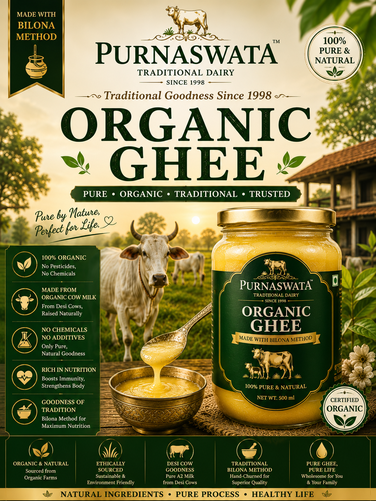
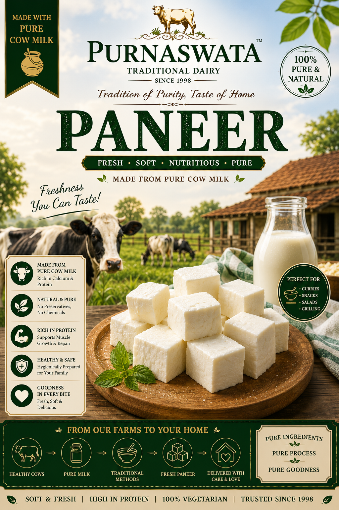

30 min
30 min
Main Course
Ghee Rice (Ghee Ani)
Fluffy basmati rice tempered with Purnasatwa cow ghee, cumin, bay leaf, and whole spices. A simple yet aromatic dish.
25 min
Breakfast
Ghee Paratha
Crispy layered paratha pan-fried with generous dollops of pure cow ghee. Serve hot with pickle and curd.
45 min
Dessert
Kheer (Rice Pudding)
Slow-cooked creamy rice kheer enriched with cow ghee, cardamom, and dry fruits. A traditional Indian dessert.

35 min
Main Course
Ghee Dal Tadka
Comforting yellow dal with a tempering of cow ghee, garlic, cumin, and dried red chilies. Perfect with rice or roti.

40 min
Main Course
Ghee Paneer Butter Masala
Soft paneer cubes in a rich tomato-cream gravy cooked with aromatic spices and finished with cow ghee.
10 min
Beverage
Ghee Shrikhand
Creamy hung curd sweetened and flavored with saffron, cardamom, and a touch of ghee. A festive dessert.